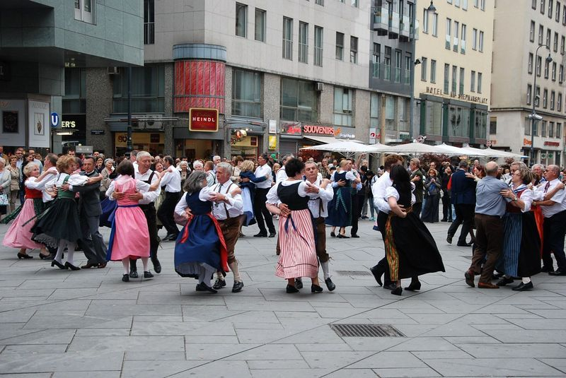
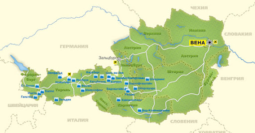

Народности
Население 8 420 010 человек (2013). Согласно переписи 2006 года, крупнейшая этническая группа немецкоязычные австрийцы, составляет 88,6 % населения страны. Основной официальный язык — немецкий. Разговорный и официальный язык австрийцев существенно отличается от официального немецкого языка Германии. Разговорные австрийские диалекты близки баварскому диалекту Германии и немецкому языку Швейцарии (Форарльберг).
Кроме того, имеется 6 признанных национальных меньшинств: хорваты, словенцы, чехи, словаки, венгры, цыгане (всего ок. 300 тыс. человек). Словенцы, хорваты и венгры живут в отдельных районах Штирии, Каринтии и Бургенланда, а в Вене к ним добавляются чехи и евреи. Многие австрийские граждане считают себя не только австрийцами, но, по происхождению из той или другой земли, также штирийцами, тирольцами и т. д. В 2015 году 1 813 000 человек являлись иммигрантами 1 и 2 поколения.
В основном это выходцы из бывшей Югославии — свыше 0,5 млн человек (1/2 — сербы), до 300 тыс. — турки и курды. Среди остальных: румыны — 80 тыс., поляки — 70 тыс., итальянцы, русские, албанцы, болгары и прочие

Интересные факты
Самый старый город на территории современной Австрии, Лиц, бы основан в глубокой древности — в 15-м году до нашей эры.
Австрия не имеет выхода к морю.
Большая часть Австрии — это горы. Одни только Восточные Альпы занимают 62 процента всей территории этой страны.
В Австрии немало водопадов, а один из них, Кримль — самый высокий в Европе (см. интересные факты о водопадах).
Название «Австрия» в переводе с немецкого означает «Восточная страна».
Климат
Австрия обладает умеренным, переходным к континентальному, климатом, сильно зависящим от высоты.
Лето тёплое, солнечное, средняя температура составляет + 20 °C. По мере подъёма вверх, температура ночью может достичь нулевой отметки. Зима мягкая в равнинах и холодная в горах, температура на равнинах опускается до − 2 °C, а в горной местности до − 14 °С. Осадки варьируют от 500 до 3000 мм в год, в зависимости от высоты и рельефа.